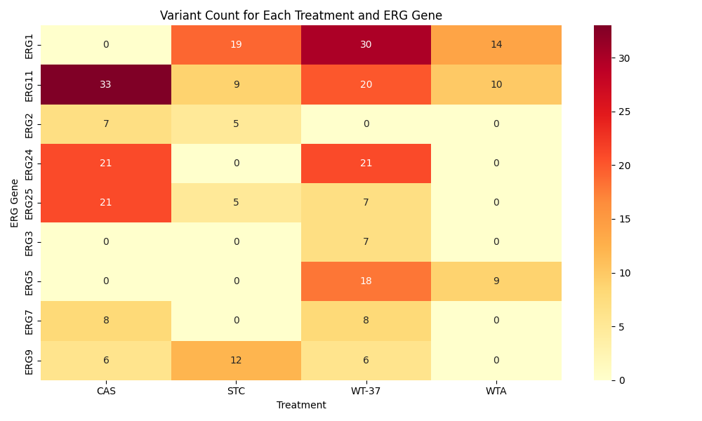
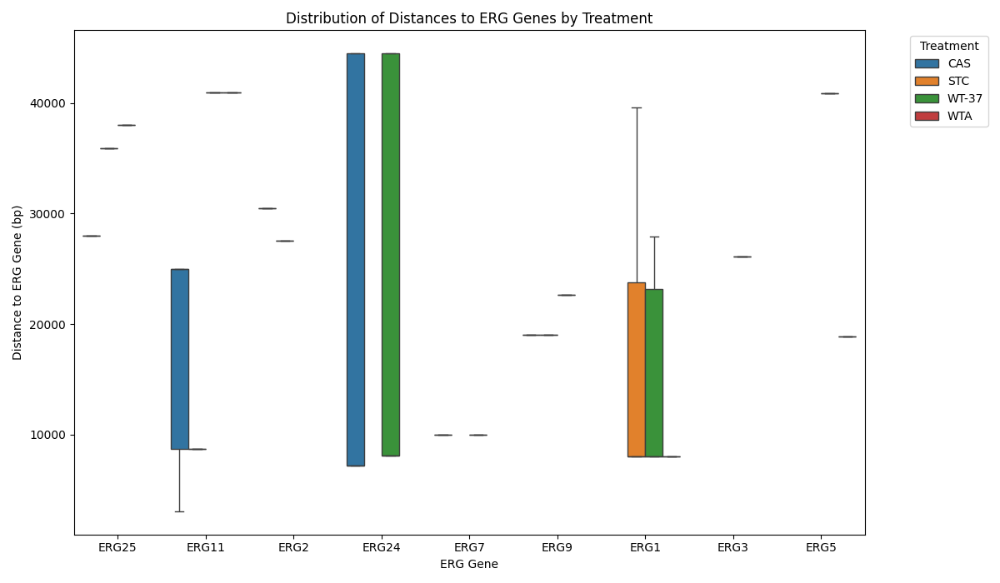

Variant Proximity & Impact Summary
Summary Table (Sorted by Increasing Distance)
| ERG_Name | ERG_Scaffold | Treatment | Min_Distance_to_ERG | Variant_Count | ERG_Position_Relative | Impact |
|---|
| ERG11 | w303_scaffold_8 | CAS | 3034.0 | 15 | upstream | MODIFIER |
| ERG24 | w303_scaffold_17 | CAS | 7196.0 | 3 | downstream | MODERATE |
| ERG24 | w303_scaffold_17 | CAS | 7196.0 | 18 | downstream | MODIFIER |
| ERG1 | w303_scaffold_7 | STC | 8003.0 | 18 | downstream | MODIFIER |
| ERG1 | w303_scaffold_7 | WT-37 | 8003.0 | 21 | downstream | MODIFIER |
| ERG1 | w303_scaffold_7 | WTA | 8003.0 | 14 | downstream | MODIFIER |
| ERG24 | w303_scaffold_17 | WT-37 | 8064.0 | 18 | downstream | MODIFIER |
| ERG24 | w303_scaffold_17 | WT-37 | 8064.0 | 3 | downstream | MODERATE |
| ERG11 | w303_scaffold_8 | STC | 8682.0 | 9 | upstream | MODIFIER |
| ERG7 | w303_scaffold_8 | WT-37 | 9952.0 | 8 | upstream | MODIFIER |
| ERG7 | w303_scaffold_8 | CAS | 9952.0 | 8 | upstream | MODIFIER |
| ERG5 | w303_scaffold_16 | WTA | 18840.0 | 9 | downstream | MODIFIER |
| ERG9 | w303_scaffold_8 | CAS | 19038.0 | 6 | upstream | MODIFIER |
| ERG9 | w303_scaffold_8 | STC | 19038.0 | 12 | upstream | MODIFIER |
| ERG9 | w303_scaffold_8 | WT-37 | 22621.0 | 6 | downstream | MODIFIER |
| ERG1 | w303_scaffold_7 | WT-37 | 23144.0 | 9 | upstream | MODIFIER |
| ERG11 | w303_scaffold_8 | CAS | 24964.0 | 18 | downstream | MODIFIER |
| ERG3 | w303_scaffold_12 | WT-37 | 26116.0 | 6 | downstream | MODIFIER |
| ERG3 | w303_scaffold_12 | WT-37 | 26116.0 | 1 | downstream | MODERATE |
| ERG2 | w303_scaffold_16 | STC | 27568.0 | 4 | downstream | MODIFIER |
| ERG2 | w303_scaffold_16 | STC | 27568.0 | 1 | downstream | LOW |
| ERG25 | w303_scaffold_7 | CAS | 28033.0 | 21 | upstream | MODIFIER |
| ERG2 | w303_scaffold_16 | CAS | 30473.0 | 7 | downstream | MODIFIER |
| ERG25 | w303_scaffold_7 | STC | 35873.0 | 5 | upstream | MODIFIER |
| ERG25 | w303_scaffold_7 | WT-37 | 38043.0 | 7 | downstream | MODIFIER |
| ERG1 | w303_scaffold_7 | STC | 39592.0 | 1 | downstream | MODERATE |
| ERG5 | w303_scaffold_16 | WT-37 | 40870.0 | 3 | downstream | MODERATE |
| ERG5 | w303_scaffold_16 | WT-37 | 40870.0 | 15 | downstream | MODIFIER |
| ERG11 | w303_scaffold_8 | WTA | 40943.0 | 1 | upstream | HIGH |
| ERG11 | w303_scaffold_8 | WT-37 | 40943.0 | 18 | upstream | MODIFIER |
| ERG11 | w303_scaffold_8 | WT-37 | 40943.0 | 2 | upstream | HIGH |
| ERG11 | w303_scaffold_8 | WTA | 40943.0 | 9 | upstream | MODIFIER |
Heatmap: Variant Count for Each Treatment and ERG Gene

Boxplot: Distribution of Distances to ERG Genes by Treatment
